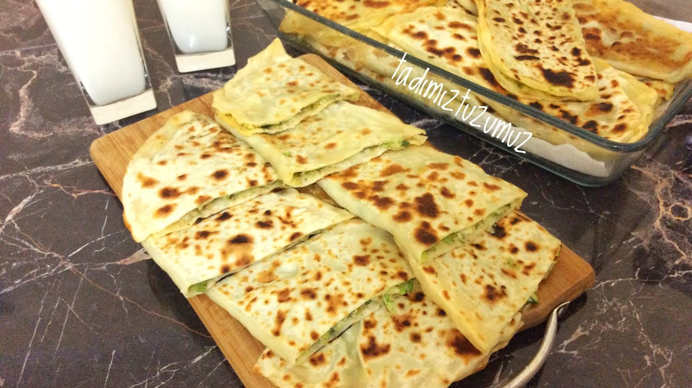
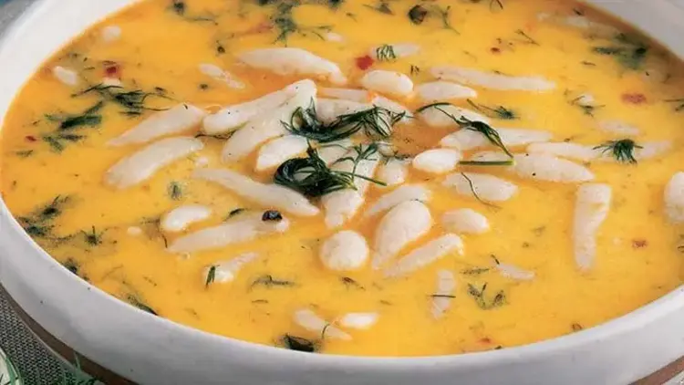

Bolu Mutfak Kültürü
Aşçılar Diyarı Bolu’nun Sofrasına Davet

Bolu, Osmanlı saray mutfağına aşçılar yetiştiren köklü bir gastronomi şehridir. Doğal malzemelerle hazırlanan, sade ama leziz yemekleriyle bilinir. Bolu’da yöresel tatlar doğayla iç içe yaşar.
Yaylalardan gelen süt ürünleri, sebzeler ve et yemekleri Bolu mutfağının temel taşlarıdır. Gözlemeler, çorbalar ve etli sulu yemekler bölgeye has lezzetler arasında öne çıkar.
- Geleneksel et yemekleri
- Doğal sebzelerle yapılan yemekler
- El yapımı gözleme ve hamur işleri
- Saraydan halka uzanan lezzetler
Öne Çıkan Yemekler ve Mekan Önerileri

Kabaklı Gözleme
Bolu'ya özgü bu gözleme, rendelenmiş kabak ve lor peyniriyle hazırlanır. Odun ateşinde pişirilerek enfes bir tat sunar.
Nerede Yenir?
- 📍 Gölcük Gözleme Evi
- 📍 Bolu Yayla Sofrası
- 📍 Kubbeli Kadınlar Gözleme Salonu

Ovmaç Çorbası
Un, yoğurt, sarımsak ve tereyağı ile hazırlanan; küçük topaklar haline getirilen hamurun çorbaya katılmasıyla oluşan geleneksel bir lezzet.
Nerede Yenir?
- 📍 Bolu Hanımeli Sofrası
- 📍 Mengen Lokantası
- 📍 Aşçı Dede Çorba Evi